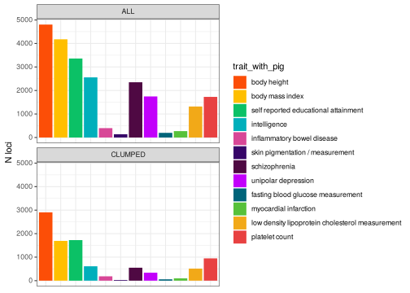
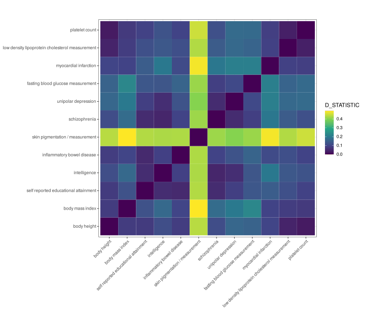
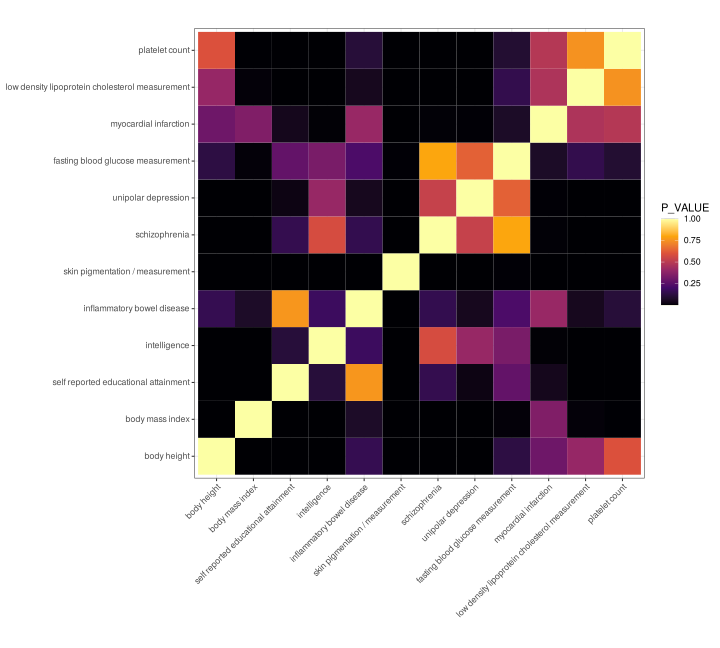

/hps/nobackup/birney/users/ian/hmn_fstlibrary(here)
source(here::here("code", "scripts", "source.R"))Full Snakemake pipeline here: https://github.com/brettellebi/human_traits_fst/tree/master/code/snakemake/20210416
cd /hps/software/users/birney/ian/repos/human_traits_fst
conda activate snakemake
sing_load
snmk_proj="20210416"
snakemake \
--jobs 5000 \
--latency-wait 500 \
--cluster-config code/snakemake/$snmk_proj/config/cluster.json \
--cluster 'bsub -g /snakemake_bgenie -J {cluster.name} -n {cluster.n} -M {cluster.memory} -o {cluster.output} -e {cluster.error}' \
--keep-going \
--rerun-incomplete \
--use-conda \
--use-singularity \
-s code/snakemake/$snmk_proj/Snakefile \
-p# Variables
gcat_traits = gwasrapidd::get_traits(efo_trait = target_traits)
trait_ids = gcat_traits@traits$efo_id
names(trait_ids) = trait_ids
target_dir = here::here("data/gwasrapidd/20210525")
# Read in raw associations objects
assocs_raw = lapply(trait_ids, function(TRAIT_ID){
readRDS(file.path(target_dir, "associations_raw", paste(TRAIT_ID, ".rds", sep = "")))
})
# Read in raw studies objects
studies_raw = lapply(trait_ids, function(TRAIT_ID){
readRDS(file.path(target_dir, "studies_raw", paste(TRAIT_ID, ".rds", sep = "")))
})
# Read in association-study key
studies_key = lapply(trait_ids, function(TRAIT_ID){
readRDS(file.path(target_dir, "studies_key", paste(TRAIT_ID, ".rds", sep = "")))
})
# Read in genotypes from VCFs
genos_raw = lapply(trait_ids, function(TRAIT_ID){
path = file.path(target_dir, "vcfs", paste(TRAIT_ID, ".vcf.gz", sep = ""))
n_variants = nrow(pegas::VCFloci(path))
pegas::read.vcf(path, to = n_variants)
})
# Read in loci from VCFs
loci_info = lapply(trait_ids, function(TRAIT_ID){
out = pegas::VCFloci(file.path(target_dir, "vcfs", paste(TRAIT_ID, ".vcf.gz", sep = "")))
out %>%
dplyr::mutate(CHROM = as.double(CHROM))
})
# Create vector of populations
## Read in population file
pop_file = readr::read_csv(here::here("data/1kg_populations.csv"))
## Create vector of populations
populations = unlist(lapply(rownames(genos_raw[[1]]), function(sample){
pop_file$Population[pop_file$Sample == sample]
}))
## Create data frame with just 2,504 individuals
pops_1kg = pop_file %>%
dplyr::filter(Sample %in% rownames(genos_raw[[1]]))
# Read in clumped SNPs
clumped = lapply(trait_ids, function(TRAIT_ID){
readr::read_delim(file.path(target_dir, "plink/clumped", paste(TRAIT_ID, ".clumped", sep = "")),
delim = " ", trim_ws = T)
})
# Read in 012 genotypes
genos_012 = lapply(trait_ids, function(TRAIT_ID){
readr::read_tsv(file.path(target_dir, "plink/recode_012", paste(TRAIT_ID, ".traw", sep = ""))) %>%
# rename columns to remove duplicated ID
dplyr::rename_with(~str_split(.x, pattern = "_", simplify = T) %>%
subset(select = 1),
.cols = matches("_"))
})How many unique SNPs for each trait?
# How many unique SNPs in associations?
raw_assocs_count = purrr::map(assocs_raw, function(TRAIT_ID){
TRAIT_ID@risk_alleles %>%
dplyr::select(variant_id)
}) %>%
dplyr::bind_rows(.id = "efo_id") %>%
dplyr::left_join(.,
gcat_traits@traits,
by = "efo_id") %>%
# combine various pigmentation traits
dplyr::mutate(TRAIT = dplyr::recode(trait, !!!pig_recode_vec),
TRAIT = factor(TRAIT, levels = extended_traits)) %>%
dplyr::group_by(TRAIT) %>%
dplyr::distinct(variant_id) %>%
dplyr::count(name = "N_ASSOCS")
#How many unique SNPs in VCFs
purrr::map(loci_info, function(TRAIT_ID){
TRAIT_ID %>%
dplyr::select(ID)
}) %>%
dplyr::bind_rows(.id = "efo_id") %>%
dplyr::left_join(.,
gcat_traits@traits,
by = "efo_id") %>%
dplyr::mutate(TRAIT = dplyr::recode(trait, !!!pig_recode_vec),
TRAIT = factor(TRAIT, levels = extended_traits)) %>%
dplyr::group_by(TRAIT) %>%
dplyr::distinct(ID) %>%
dplyr::count(name = "N_VCF") %>%
# bind with raw assocs counts
dplyr::left_join(raw_assocs_count,
.,
by = "TRAIT") %>%
# Order and add column with percentage
dplyr::mutate(PERC_RETREIVED = N_VCF / N_ASSOCS) %>%
dplyr::arrange(.by_group = T) %>%
knitr::kable(.)| TRAIT | N_ASSOCS | N_VCF | PERC_RETREIVED |
|---|---|---|---|
| body height | 4938 | 4804 | 0.9728635 |
| body mass index | 4262 | 4177 | 0.9800563 |
| self reported educational attainment | 3387 | 3360 | 0.9920283 |
| intelligence | 2595 | 2558 | 0.9857418 |
| inflammatory bowel disease | 411 | 399 | 0.9708029 |
| all pigmentation | 1203 | 1054 | 0.8761430 |
| schizophrenia | 2571 | 2350 | 0.9140412 |
| unipolar depression | 1794 | 1747 | 0.9738016 |
| fasting blood glucose measurement | 200 | 198 | 0.9900000 |
| myocardial infarction | 276 | 272 | 0.9855072 |
| low density lipoprotein cholesterol measurement | 1504 | 1319 | 0.8769947 |
| platelet count | 1851 | 1728 | 0.9335494 |
pegasfst_pegas = lapply(genos_raw, function(TRAIT_ID){
pegas::Fst(TRAIT_ID, pop = populations)
})fst_pegas_df = lapply(trait_ids, function(TRAIT_ID){
# Loci info
loci = loci_info[[TRAIT_ID]] %>%
dplyr::select(CHROM, POS, ID, REF, ALT)
# Risk alleles
risk_alleles = assocs_raw[[TRAIT_ID]]@risk_alleles %>%
dplyr::select(association_id, variant_id, risk_allele)
# Study key
study_key = studies_key[[TRAIT_ID]]
# Studies
studies = studies_raw[[TRAIT_ID]]@studies %>%
dplyr::select(study_id, initial_sample_size, replication_sample_size)
# Fst
fst = fst_pegas[[TRAIT_ID]] %>%
data.frame(.) %>%
tibble::rownames_to_column(var = "ID") %>%
dplyr::select(ID, FST_PEGAS = Fst)
# Bind all
out = dplyr::left_join(loci, risk_alleles, by = c("ID" = "variant_id")) %>%
dplyr::left_join(study_key, by = "association_id") %>%
dplyr::left_join(studies, by = "study_id") %>%
dplyr::left_join(fst, by = "ID")
}) %>%
dplyr::bind_rows(.id = "EFO_ID") %>%
# Add `trait` for each `efo_id` from `gcat_traits` key
dplyr::left_join(gcat_traits@traits %>%
dplyr::select(efo_id, trait),
by = c("EFO_ID" = "efo_id")) %>%
dplyr::select(EFO_ID, trait, everything()) %>%
# Recode Pigmentation traits
dplyr::mutate(TRAIT = dplyr::recode(trait, !!!pig_recode_vec)) %>%
# Factorise to order
dplyr::mutate(TRAIT = factor(TRAIT, levels = extended_traits))
# Create a second df with clumped SNPs
## Get clumped SNPs
clumped_snps = lapply(clumped, function(TRAIT_ID) {
TRAIT_ID %>%
dplyr::pull(SNP)
}) %>% purrr::flatten_chr()
## Create list and bind
fst_pegas_df_clumps= list(
"ALL" = fst_pegas_df,
"CLUMPED" = fst_pegas_df %>%
dplyr::filter(ID %in% clumped_snps)
) %>%
dplyr::bind_rows(.id = "FILTER")
# How many unique SNPs in total (having grouped by TRAIT)
fst_pegas_df_clumps %>%
dplyr::filter(FILTER == "ALL") %>%
dplyr::group_by(TRAIT) %>%
dplyr::distinct(ID) %>%
nrow()## [1] 23966# How many unique SNPs in total after clumping (having grouped by TRAIT)
fst_pegas_df_clumps %>%
dplyr::filter(FILTER == "CLUMPED") %>%
dplyr::group_by(TRAIT) %>%
dplyr::distinct(ID) %>%
nrow()## [1] 10221fst_pegas_df_clumps %>%
# create new column combining skin pigmentation traits
dplyr::mutate(trait_with_pig = dplyr::recode(trait,
"skin pigmentation" = "skin pigmentation / measurement",
"skin pigmentation measurement" = "skin pigmentation / measurement")) %>%
# order traits
dplyr::mutate(trait_with_pig = factor(trait_with_pig, levels = traits_with_pig)) %>%
# remove all pigmentation traits other than skin pigmentation and skin pigmentation measurement
dplyr::filter(trait_with_pig %in% traits_with_pig) %>%
# group by FILTER and TRAIT to take unique SNPs within each group
dplyr::group_by(FILTER, trait_with_pig) %>%
# take unique IDs
dplyr::distinct(ID, .keep_all = T) %>%
# ungroup
dplyr::ungroup() %>%
# plot
ggplot() +
geom_bar(aes(trait_with_pig, fill = trait_with_pig)) +
scale_fill_manual(values = pal_primary_with_pig) +
theme_bw() +
theme(axis.text.x = element_blank(),
axis.title.x = element_blank(),
axis.ticks.x = element_blank()) +
ylab("N loci") +
facet_wrap(~FILTER, nrow = 2)
fst_pegas_df_clumps %>%
# filter for clumped index SNPs
dplyr::filter(FILTER == "CLUMPED") %>%
# create new column combining skin pigmentation traits
dplyr::mutate(trait_with_pig = dplyr::recode(trait,
"skin pigmentation" = "skin pigmentation / measurement",
"skin pigmentation measurement" = "skin pigmentation / measurement")) %>%
# remove all pigmentation traits other than skin pigmentation and skin pigmentation measurement
dplyr::filter(trait_with_pig %in% traits_with_pig) %>%
# group by trait to take unique SNPs
dplyr::group_by(trait_with_pig) %>%
# take unique IDs
dplyr::distinct(ID, .keep_all = T) %>%
# reverse order of traits to put `body height` at the top
dplyr::mutate(trait_with_pig = factor(trait_with_pig, levels = rev(traits_with_pig))) %>%
# plot
ggplot(aes(FST_PEGAS, trait_with_pig, fill = trait_with_pig, colour = trait_with_pig)) +
geom_density_ridges(scale = 2,
bandwidth = 0.003,
calc_ecdf = TRUE,
quantiles = c(0.5, 0.9),
quantile_lines = T,
jittered_points = T,
point_shape = '|', alpha = 0.85, point_size = 2,
position = position_points_jitter(height = 0),
) +
scale_fill_manual(values = pal_primary_with_pig) +
scale_colour_manual(values = darker(pal_primary_with_pig)) +
guides(fill = F, colour = F) +
theme_bw() +
scale_y_discrete(expand = expansion(add = c(0.2, 2.3))) +
ylab(NULL) +
ggtitle("Median and 90%") ## Warning: `guides(<scale> = FALSE)` is deprecated. Please use `guides(<scale> = "none")` instead.## Warning: Removed 1 rows containing non-finite values (stat_density_ridges).\(F_{ST}\) calculated with 26 populations
fst_pegas_df_clumps %>%
# filter for clumped index SNPs
dplyr::filter(FILTER == "CLUMPED") %>%
# create new column combining skin pigmentation traits
dplyr::mutate(trait_with_pig = dplyr::recode(trait,
"skin pigmentation" = "skin pigmentation / measurement",
"skin pigmentation measurement" = "skin pigmentation / measurement")) %>%
# remove all pigmentation traits other than skin pigmentation and skin pigmentation measurement
dplyr::filter(trait_with_pig %in% traits_with_pig) %>%
# group by trait to take unique SNPs
dplyr::group_by(trait_with_pig) %>%
# take unique IDs
dplyr::distinct(ID, .keep_all = T) %>%
# order traits
dplyr::mutate(trait_with_pig = factor(trait_with_pig, levels = traits_with_pig)) %>%
# plot
ggplot() +
stat_ecdf(aes(FST_PEGAS, colour = trait_with_pig)) +
scale_colour_manual(values = pal_primary_with_pig) +
guides(colour = F) +
facet_wrap(~trait_with_pig, ncol = 3) +
theme_bw() +
ggtitle("ECDF") +
labs(colour = "Trait",
x = expression(F[ST]),
y = NULL)## Warning: `guides(<scale> = FALSE)` is deprecated. Please use `guides(<scale> = "none")` instead.## Warning: Removed 1 rows containing non-finite values (stat_ecdf).Faceted
fst_pegas_df_clumps %>%
# filter for clumped index SNPs
dplyr::filter(FILTER == "CLUMPED") %>%
# create new column combining skin pigmentation traits
dplyr::mutate(trait_with_pig = dplyr::recode(trait,
"skin pigmentation" = "skin pigmentation / measurement",
"skin pigmentation measurement" = "skin pigmentation / measurement")) %>%
# remove all pigmentation traits other than skin pigmentation and skin pigmentation measurement
dplyr::filter(trait_with_pig %in% traits_with_pig) %>%
# group by trait to take unique SNPs
dplyr::group_by(trait_with_pig) %>%
# take unique IDs
dplyr::distinct(ID, .keep_all = T) %>%
# order traits
dplyr::mutate(trait_with_pig = factor(trait_with_pig, levels = traits_with_pig)) %>%
# plot
ggplot() +
stat_ecdf(aes(FST_PEGAS, colour = trait_with_pig)) +
scale_colour_manual(values = pal_primary_with_pig) +
theme_bw() +
ggtitle("ECDF") +
labs(colour = "Trait",
x = expression(F[ST]),
y = NULL)## Warning: Removed 1 rows containing non-finite values (stat_ecdf).Unfaceted
Comparing \(F_{ST}\) distributions of each trait against each other.
ks_list = fst_pegas_df_clumps %>%
# filter for clumped index SNPs
dplyr::filter(FILTER == "CLUMPED") %>%
# create new column combining skin pigmentation traits
dplyr::mutate(trait_with_pig = dplyr::recode(trait,
"skin pigmentation" = "skin pigmentation / measurement",
"skin pigmentation measurement" = "skin pigmentation / measurement")) %>%
# remove all pigmentation traits other than skin pigmentation and skin pigmentation measurement
dplyr::filter(trait_with_pig %in% traits_with_pig) %>%
# group by trait to take unique SNPs
dplyr::group_by(trait_with_pig) %>%
# take unique IDs
dplyr::distinct(ID, .keep_all = T) %>%
# order traits
dplyr::mutate(trait_with_pig = factor(trait_with_pig, levels = traits_with_pig)) %>%
# split by trait
split(., f = .$trait_with_pig)
# Run KS test
ks_out = purrr::map(ks_list, function(TRAIT_1){
lapply(ks_list, function(TRAIT_2){
out = ks.test(TRAIT_1$FST_PEGAS,
TRAIT_2$FST_PEGAS)
df = data.frame(D_STATISTIC = out$statistic,
P_VALUE = out$p.value)
}) %>%
dplyr::bind_rows(.id = "TRAIT_2")
}) %>%
dplyr::bind_rows(.id = "TRAIT_1") %>%
# order TRAIT variables
dplyr::mutate(TRAIT_1 = factor(TRAIT_1, levels = traits_with_pig),
TRAIT_2 = factor(TRAIT_2, levels = traits_with_pig))ks_out %>%
# plot
ggplot() +
geom_tile(aes(TRAIT_1, TRAIT_2, fill = D_STATISTIC)) +
scale_fill_viridis_c() +
theme_bw() +
coord_fixed() +
labs(x = NULL, y = NULL) +
theme(axis.text.x = element_text(angle = 45, hjust = 1))
ks_out %>%
# plot
ggplot() +
geom_tile(aes(TRAIT_1, TRAIT_2, fill = P_VALUE)) +
scale_fill_viridis_c(option = "inferno") +
theme_bw() +
coord_fixed() +
labs(x = NULL, y = NULL) +
theme(axis.text.x = element_text(angle = 45, hjust = 1))